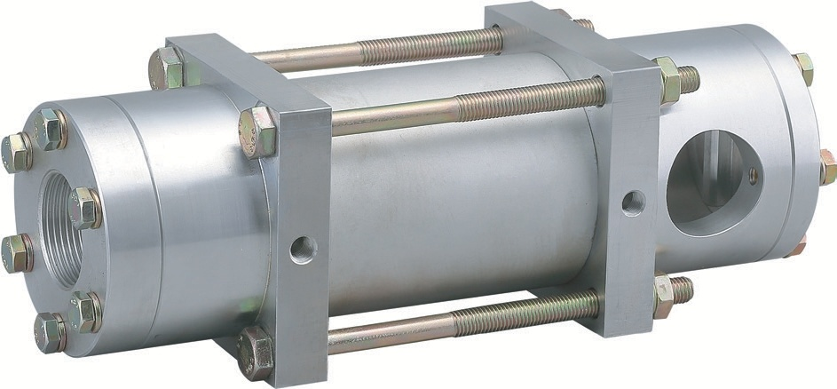
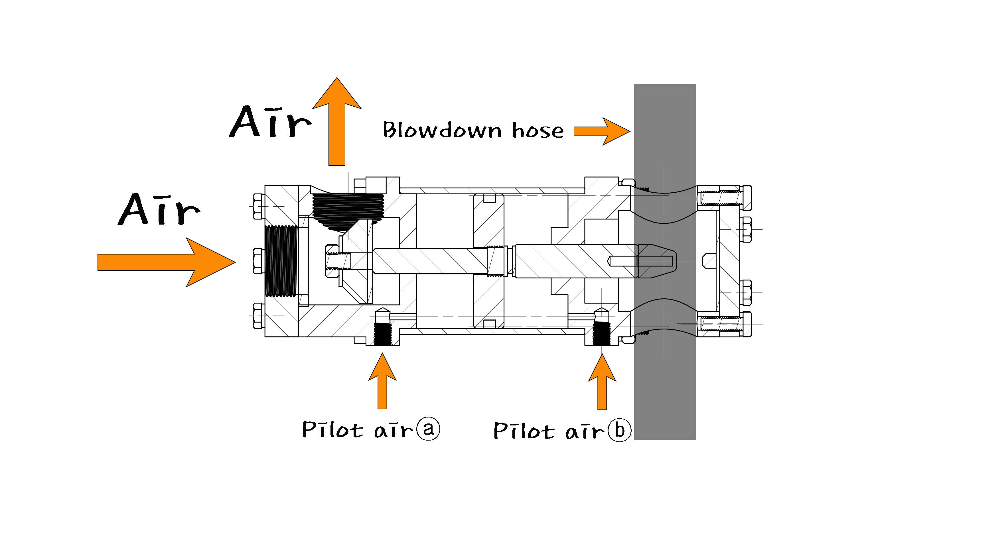

블라스트 부품 / 콤보밸브
콤보밸브 Combo Valve
주로 원챔버(One-Chamber) 방식 블라스트 장비의 탱크 외부에 설치되어, 탱크 내 공기 급기(가압)와 배기(감압)를 하나의 밸브로 동시에 제어하는 복동식 공압 콤보밸브입니다.


작동 원리 및 구조적 특징 Features & Mechanism
- 급기·배기 일체형 복동 공압 제어: 급기(콘) 측과 배기(핀치 램) 측이 하나의 축으로 연동되어, 가압 시에는 배기 호스를 차단하고 배기 시에는 급기 라인을 자동 차단합니다.
- 알루미늄 합금 바디: 경량 알루미늄 합금 재질을 적용해 부식 및 마모에 강하며 중량(5kg)이 가벼워 설치 부담이 적습니다.
- 간편한 현장 정비: 설비에 장착된 밸브 본체를 완전히 분리하지 않고도 배기 호스(블로우다운 호스) 및 내부 콘을 교체할 수 있습니다.
단면도 및 기능 설명 Operating Principle

- 가압 · 분사 모드 (Pilot air ⓐ 공급): 파일럿 포트 ⓐ로 공기가 주입되면 내부 디스크 및 축이 오른쪽으로 이동하여 핀치 램(Pinch Ram)이 블로우다운 호스(배기 라인)를 눌러 차단하고, 왼쪽 에어 라인이 열려 탱크로 압축공기가 주입됩니다. 이에 따라 탱크 내부가 가압되어 블라스트 호스 측으로 쇼트볼·그리트가 원활히 공급됩니다.
- 배기 · 재충진 모드 (Pilot air ⓑ 공급): 파일럿 포트 ⓑ로 공기가 주입되면 디스크 및 축이 왼쪽으로 이동하여 콘이 급기 에어 라인을 차단하고, 막혀 있던 배기 호스가 열려 탱크 내 잔압이 외부로 배출됩니다. 탱크 압력이 낮아진 뒤 상부에서 쇼트볼·그리트를 재충진합니다.
주요 사양 Specifications
| 모델 (Model) | DCV-32 |
|---|---|
| 작동 방식 (Actuator) | 복동식 공압 액츄에이터 (Double-acting) |
| 적용 규격 (Available Size) | 파이프 라인 1¼" (32A) · 호스 라인 1" (홀 크기 40A) |
| 파일럿 포트 (Pilot Port) | PT ¼" |
| 중량 (Weight) | 5 kg |
견적·규격 문의 051-319-2332 · daehatw@daum.net